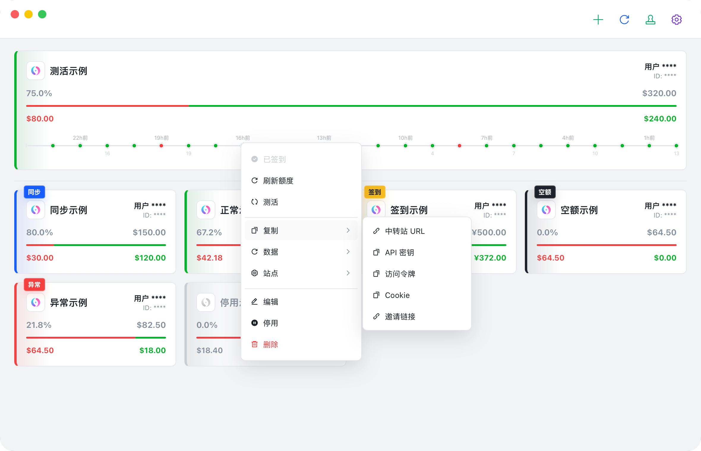
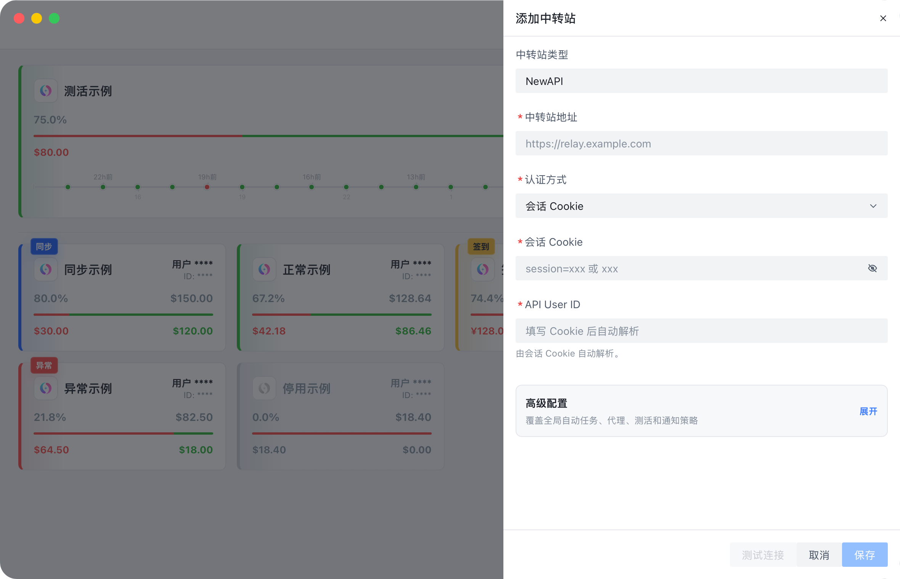
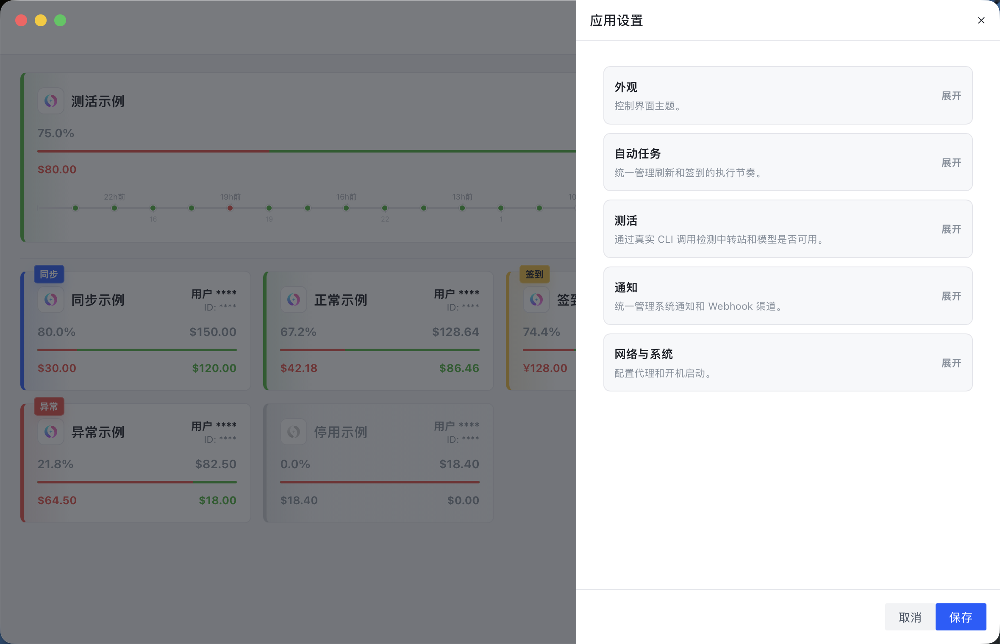
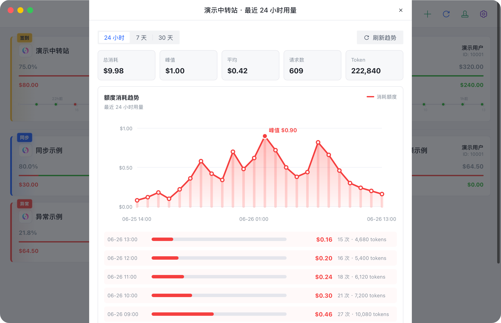
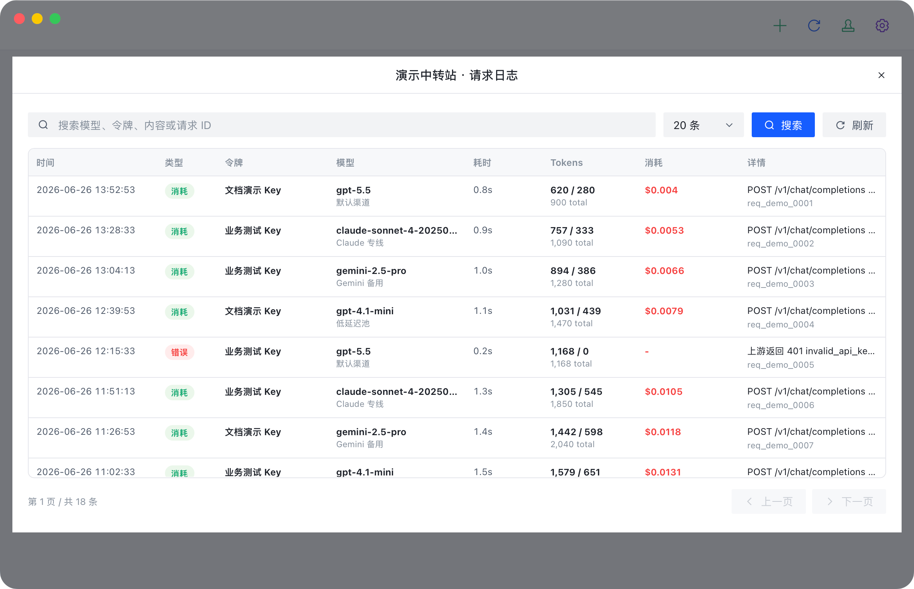
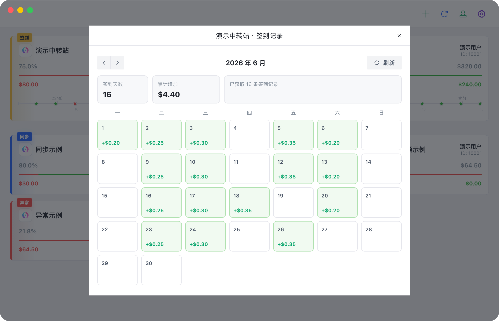

账号状态
集中查看余额、额度、账号状态和同步时间，异常状态直接体现在卡片上。
围绕多个中转站的日常维护设计，尽量减少在多个后台之间来回切换。
集中查看余额、额度、账号状态和同步时间，异常状态直接体现在卡片上。
查看签到记录、用量趋势、请求日志和 API Key 信息，远端不支持时使用本地记录兜底。
按中转站配置 Codex / Claude Code 测活，保留记录以便排查模型、代理、Key 或上游异常。
截图均来自真实桌面 App，数据使用演示配置。






安装包通过 GitHub Releases 分发，应用内更新使用 Tauri updater 签名校验。
`.sig` 文件用于应用内自动更新签名校验，不是手动安装包。应用会读取 GitHub Releases 的 `latest.json`，下载当前平台匹配的更新包，校验后安装并重启。
把具体使用说明拆到独立页面，README 只保留项目入口。
几个下载和使用时最容易混淆的点。
不用。它是应用内自动更新用的签名文件，不是安装入口。
当前安装包通过 GitHub 分发，但没有做系统级付费代码签名。macOS 或 Windows 可能会显示系统信任提示。
不能。API Key 查询到的是 Key 维度额度，不等同于账号总额度，也可能返回无限额度。